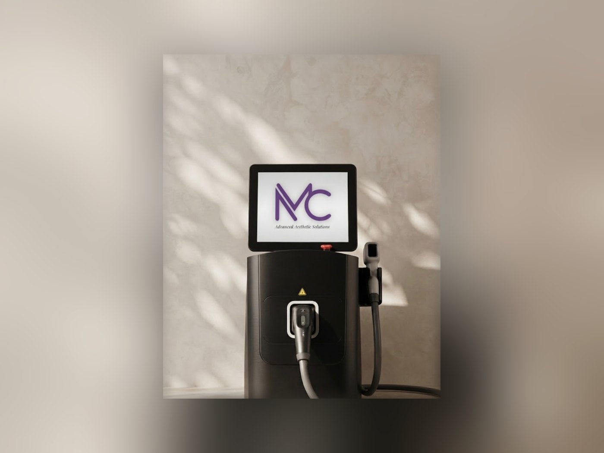
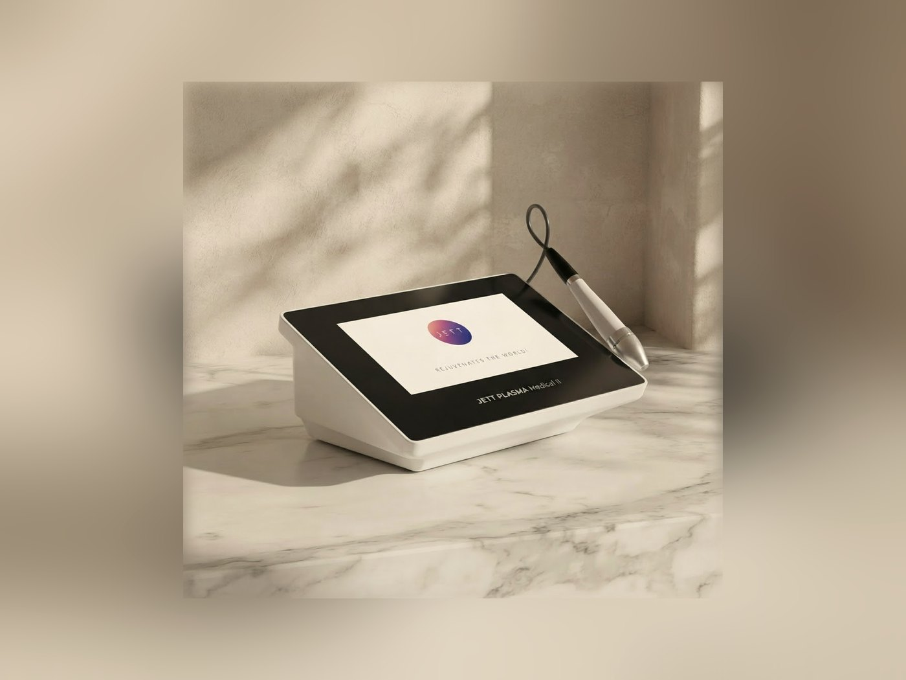

Laser Hair Reduction
We target the pigment in the hair to gradually shut down the follicle — over a series, not a single visit. Hair grows in cycles, and laser can only treat hair that's actively growing at the moment of treatment, which is why results build progressively across a full series rather than all at once.
Spacing sessions consistently is what makes the series actually work — so we plan your schedule up front and keep you on it.
A series of sessions spaced several weeks apart, with visible thinning and shedding building over time. We'll walk you through pre- and post-care at your first visit.
Advanced Facial
An advanced facial — deep cleanse, real analysis, and a clear picture of what your skin needs next. This is where most journeys with us begin.
It's medical-grade, not a one-size-fits-all routine. We customize each visit to what your skin is actually telling us — and it's also how we get to know each other before recommending anything more involved.
No downtime, no discomfort. Some modalities may include gentle warmth or light muscle sensation — all normal, all part of the process. You'll leave with a glow, not redness or irritation.
What's in an Advanced Facial
We select from seven modalities on the MediSpa system — using the ones your skin needs that day, not all of them by default.
Exfoliation, cleansing and extraction in one pass — lifting away dead skin and debris while infusing hydration.
Vacuum-assisted extraction that clears congestion from pores. The line self-cleans between clients.
Six contact points deliver gentle, controlled heat into the deeper layers to encourage firmness. This is the warmth you may feel.
Low-level current that works the facial muscles for lift and tone. This is the light muscle sensation — it shouldn't be uncomfortable.
An internal oxygen concentrator delivers pure oxygen alongside serum to brighten and calm the skin.
Warms to 42°C to soften and prepare the skin, then cools to 5°C to soothe and settle it afterward.
A carbonic buffing step that refines surface texture and adds brightness.

Jett Plasma
Non-ablative plasma therapy
A gentle, controlled treatment that prompts your skin's own collagen rebuild — smoothing fine lines without cutting or removing the surface.
Jett Plasma delivers controlled plasma energy at the skin's surface, which signals the fibroblasts underneath to produce new collagen. Results build gradually over the weeks following treatment, as your body does the work.
Because the treatment is non-ablative, it doesn't break the skin's surface — so there's no crusting or peeling to plan around. Results build over the weeks that follow rather than appearing all at once. This treatment addresses fine lines and wrinkles; it isn't the right tool for pigment or lesions, and we'll always tell you honestly if something else would serve you better.

Medical Skincare
What you do at home decides how far your in-clinic results go. We carry two lines we genuinely stand behind — Truth Treatment Systems and Epitucus — chosen for ingredients with real evidence behind them.
We don't sell skincare off a shelf. Products are recommended against your skin assessment and your treatment plan — the right actives, in the right order, at doses that actually do something. If you already own something that works, we'll tell you to keep using it.